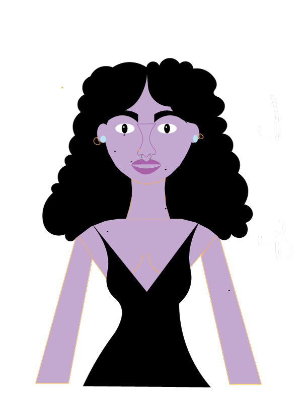
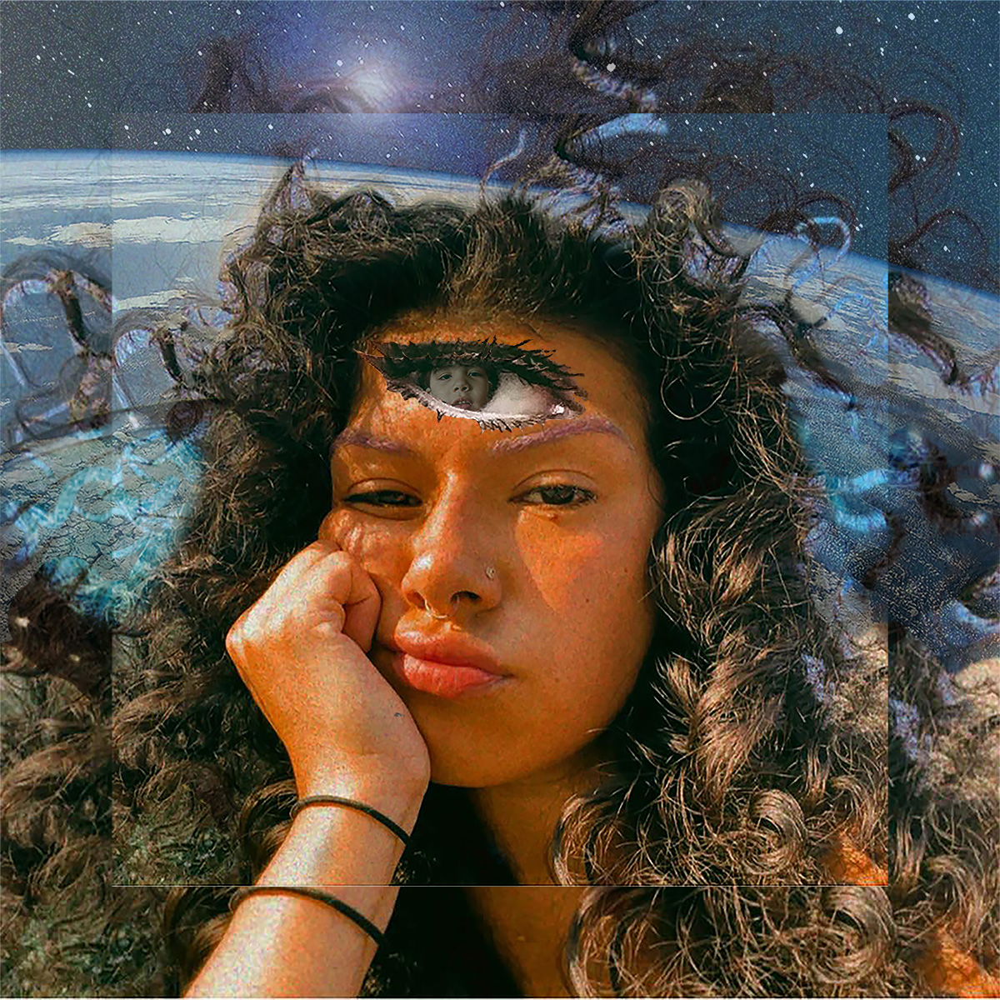
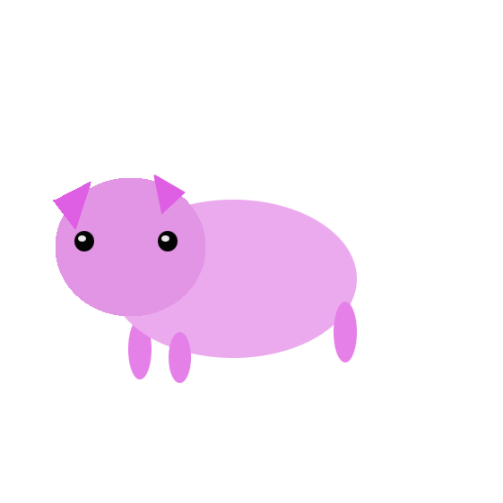
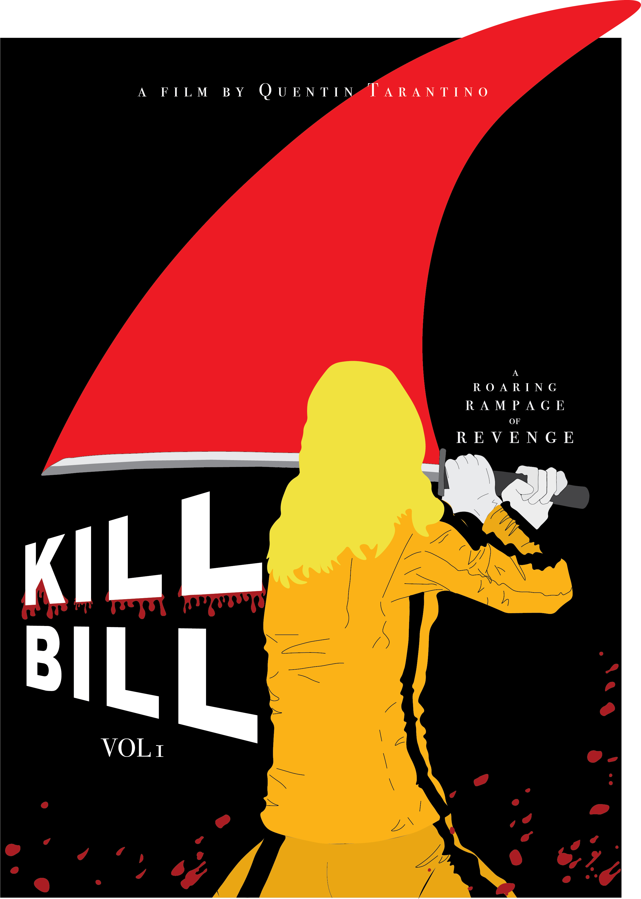
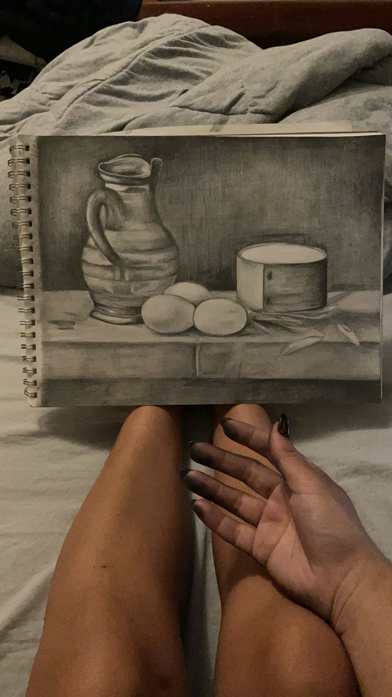
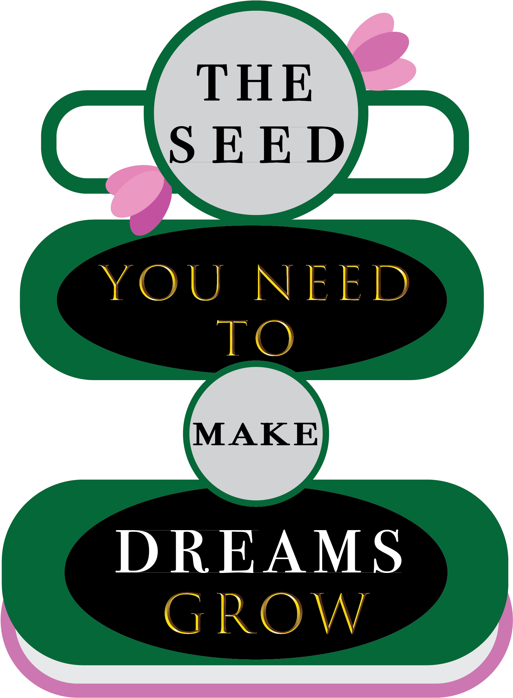
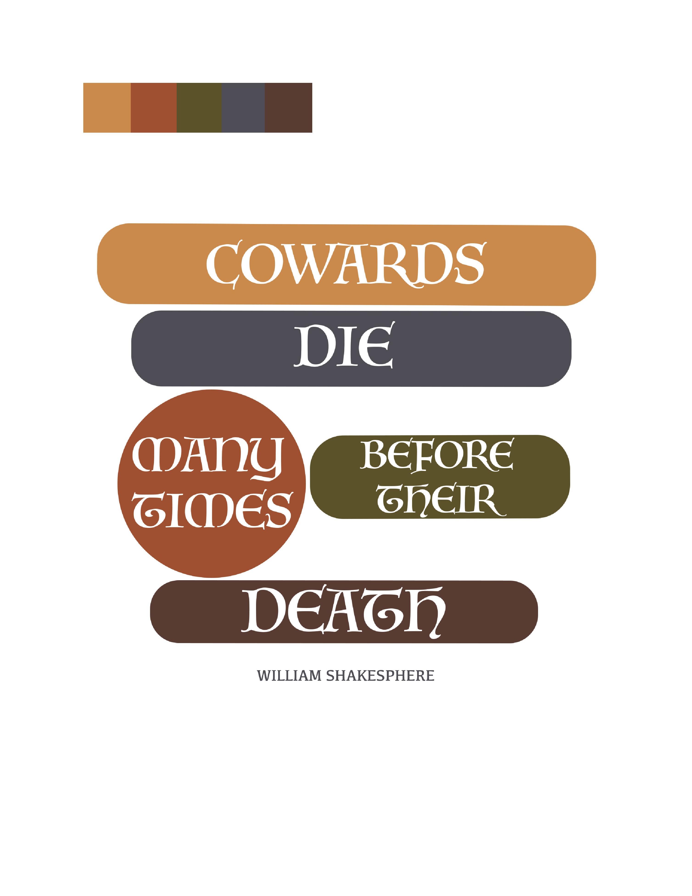
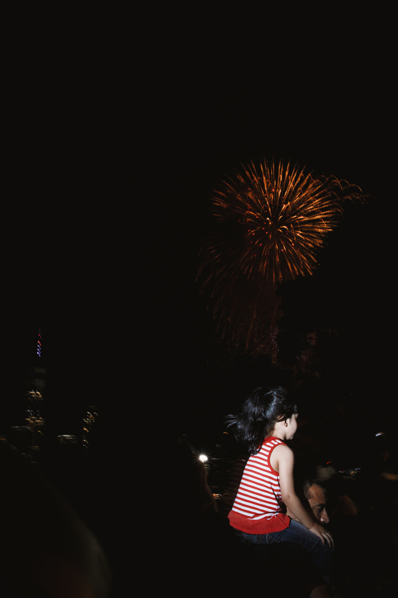

Here you will find some of my class projects as well as my personal photography, enjoy!

Me as an avatar, this was very fun to do.

Made an abstract collage of myself for Blackboard MMP class.
Kats audio story
My Audio story. Waking up and getting ready for the day. Click the play button!

So proud of this cute gassy pig GIF I created!
Final Project on Autism:
Final Project
OTHER PROJECTS OUTSIDE FROM MMP CLASS:

I created a new cover for my favorite book 1984 by George Orwell using Adobe Illustrator and Adobe Indesign.

I created a new movie poster for Kill Bill by Quentin Tarantino.

Very proud of this drawing I did. Charcoal on paper, 2021.

Quote and portriat I created of my favorite poet, Edgar Allan Poe on Adobe illustrator. 2022

I created a poster and logo signifying HOPE using Adobe Illustrator, 2022.

Practicing Typography with the slogan I made for my HOPE poster. 2022

Another typography and color palatte practice with a faveorite Shakesphere quote.

Walking around Union Square and saw this woman feeding a swarm of pigeons in the most beautiful lighting.

Taking candid pictures of people that stand out to me in NYC, 2022

Jennifer blueberry picking, 2021.

Girl on fathers shoulders watching the fireworks.
To view more of my photography visit my website in the link below:
FOTOSDEKAT
Copyright © 2021 Katheryn Hurtado - All Rights Reserved